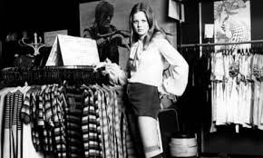
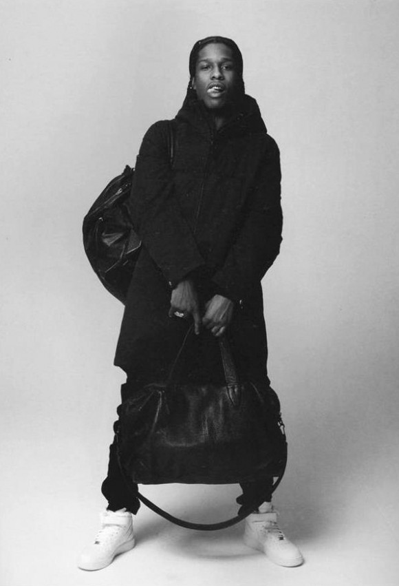

Style
History
Culture
Vault
Opinion
Rick Owens Spring/Summer 2024
Archive Margiela mannequin
Archive Raf coat
Archive fashion shirt
Archive Comme de Garcons
Archive Avant garde accessories

1972 archive fashion model

Asap Rocky